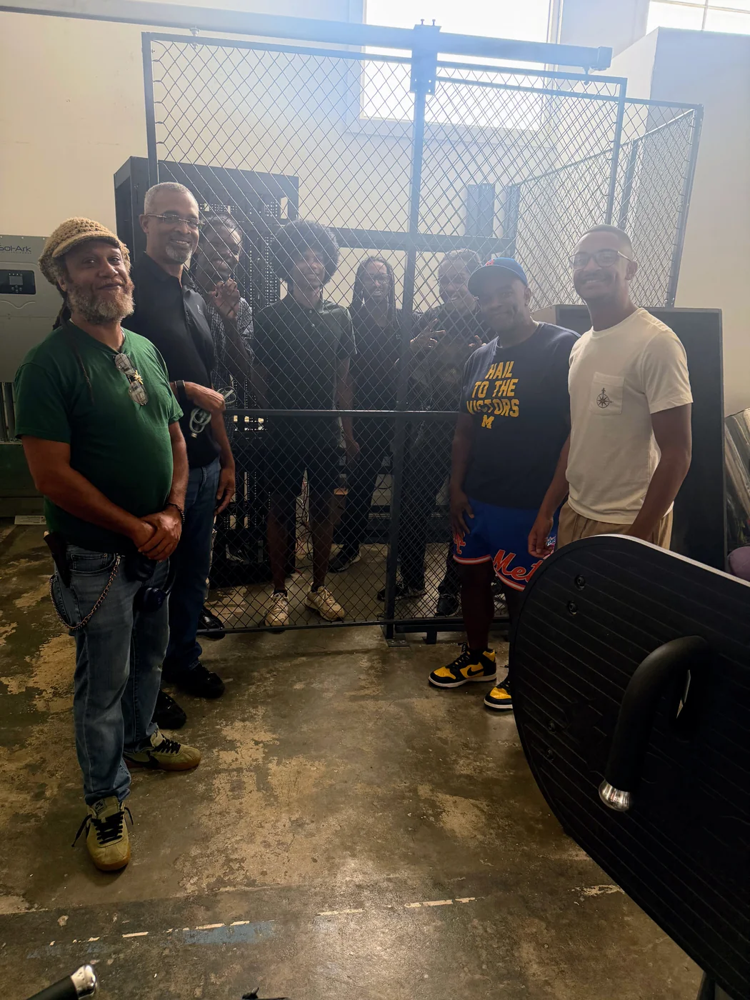
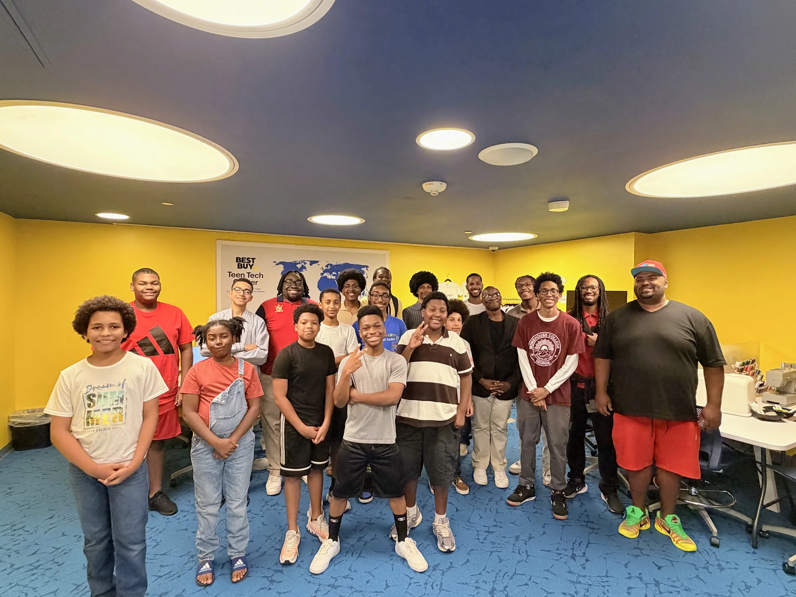
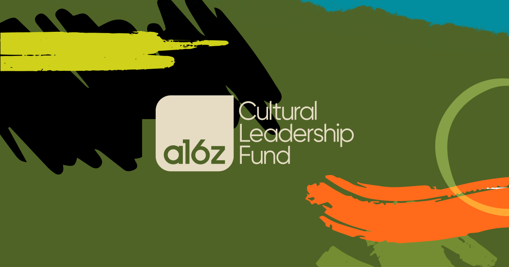

8.6×
China's installation advantage
China installed 295,000 industrial robots in 2024. The United States installed 34,200.
Most AI education stops at models and software. AARI puts students on real hardware and inside the electrical, data center, networking, cloud, and robotics systems that make AI work.
Problem
Students are learning AI without touching the hardware underneath it.
Action
Students work with power, racks, servers, networks, cloud systems, GPUs, and robots.
Solution
Electricians, technicians, and engineers ready to build and operate the AI economy.
The model gets the attention. The physical stack does the work. Production AI depends on electricity, cooling, chips, servers, networks, cloud platforms, security, edge devices, and robotics. Students cannot become operators if their education never moves beyond software and simulation.
The gap
Students use AI tools but rarely touch the power, hardware, networks, and facilities beneath them.
The AARI response
Put students in the room, put real equipment in their hands, and connect the work to durable careers.
The model is only one part of the race. Countries that deploy robots at scale give more technicians and engineers repeated experience integrating, powering, securing, operating, maintaining, and improving physical AI systems.
8.6×
China installed 295,000 industrial robots in 2024. The United States installed 34,200.
54%
More than half of all industrial robots installed worldwide in 2024 were deployed in China.
4×
South Korea operates 1,220 industrial robots per 10,000 manufacturing employees. The United States operates 307.
What the numbers mean
This is not an argument for replacing workers. It is an argument for training more Americans to build, integrate, secure, operate, and maintain automation.
The AARI response
Put students on real hardware early. Connect electrical systems, compute, networks, sensors, cybersecurity, robotics, and maintenance into one workforce pathway. Every machine becomes a classroom.
Sources: International Federation of Robotics, World Robotics 2025 and IFR robot-density data.
AARI scholars and technical mentors have begun racking and staging systems at our solar-powered Data Center Site #2 co-location facility in Atlanta. The new environment expands our ability to teach physical infrastructure, Linux, networking, virtualization, cloud architecture, cybersecurity, observability, and AI infrastructure through real equipment.
Scholars are handling servers, assembling racks, tracing cables, documenting systems, and learning how modern computing environments are built from the floor up.

2
Active training sites
Build in progress
Racking, staging, and documentation
AARI teaches the systems beneath AI, from power and compute to edge deployment and embodied robotics. As students move through the stack, they learn how each layer shapes what can be built.
AARI connects AUC and HBCU learners to labs, data centers, cloud systems, robotics work, partner workshops, and demo environments so the infrastructure behind AI becomes visible, teachable, and buildable.


From student workshops and corporate site visits to robotics labs, edge AI development, and data-center buildouts, AARI puts students inside the infrastructure, the tools, and the rooms where the future is built. Training, employers, capital, and community do not sit in separate boxes here. They reinforce each other. That is what an operator ecosystem looks like.

AUC students visiting Microsoft for applied AI and infrastructure exposure

AARI student cohort at Microsoft Atlanta
Students in technical lab sessions at Morehouse

Garage Data Center work session with students
Students reviewing live systems inside the Garage Data Center

AARI partner and student workshop

Student-led discussion during Microsoft session

AARI leadership presenting applied AI infrastructure work
The pipeline is sequential by design. Students see real environments, learn the stack, build systems, prove the work, enter the market, and then build companies of their own.
01
Students visit labs, data centers, corporate campuses, and live technical environments.
02
Students study cloud, robotics, edge AI, infrastructure, networking, and quantum foundations.
03
Students work on applied labs, demos, and product-oriented projects.
04
Students present, demo, benchmark, and defend what they built.
05
Students move into internships, jobs, research, and leadership roles.
06
The strongest operators get backed as founders. Training creates operators. Capital makes them owners.
AARI was built in Atlanta on purpose, rooted in one of the most important Black academic ecosystems in the country. Atlanta proved the model travels. The next sites are Orlando, Brooklyn, and Houston, each chosen for the same reason: talent density, an employer base that needs operators, and infrastructure demand that is not slowing down.
Each city gets a full local engine, not a satellite classroom. Same standard, same doctrine, four cities.
Access and excellence are not regional. They scale together, or they do not scale at all.
Simulation, robotics, and a defense and aerospace corridor that runs on infrastructure talent.
Dense talent, a growing tech base, and the clearest case that the operator pipeline belongs in the Northeast.
Energy, compute, and the front line of where power and AI meet.
Most AI workforce programs aim at adults who already have degrees. AARI goes earlier, into the gap nobody trains for: the sixteen to twenty year olds who will become the technicians and engineers who repair the robotics on a factory floor and raise the data centers the entire AI economy runs on. These are not entry-level jobs. They are the backbone.
By the time most programs reach a young person, the system has already decided robotics and data centers are not for them. We reach them first, put their hands on real hardware, and show them the work is technical, durable, and theirs to own. That is where the gap is. That is where we close it.
The flywheel
AARI's founding line has always been operators, not observers. The next evolution of that line is ownership. We are building the capital layer that backs the founders who come out of our pipeline, people who understand the infrastructure stack from the inside because they were trained to build it.
This is what closes the loop. The pipeline produces operators. The operators become founders. The capital backs the founders. The companies they build hire the next cohort coming up behind them. That is not a program. That is an ecosystem, and once it spins, it does not stop.
AUC-centered
Built from Atlanta’s HBCU talent base outward.
Cloud-to-edge
Students connect cloud systems to devices, robotics, and live environments.
Lab-based
Robotics and AI infrastructure labs reinforce hands-on execution.
Partner-exposed
Students see corporate, data center, and ecosystem pathways early.
Demo pipeline
Students build toward visible demos, technical explanations, and market-ready proof.
This is the AARI learning chain. Students learn how AI systems are powered, built, deployed, secured, optimized, and operated.
01
Power systems, efficiency, resiliency, and the reality that compute starts with energy.
02
GPU and accelerator awareness, edge hardware, silicon constraints, and performance tradeoffs.
03
Linux, networking, cloud, containers, security, observability, and the systems that keep AI alive.
04
Inference, deployment, optimization, guardrails, and model operations in real environments.
05
Robotics, edge AI, automation, and production workflows where systems meet the real world.
AARI connects electrical systems, data centers, cloud, cybersecurity, robotics, and advanced computing into one workforce pipeline. Students learn with real equipment, technical mentors, build sessions, industry exposure, and applied projects.
New pathway · In development
Electrical safety, power distribution, one-line diagrams, UPS and generator systems, load planning, controls, and the critical facilities work that keeps data centers and AI systems online.
Skills: electrical fundamentals, distribution, redundancy, safety, controls, and critical-power operations.
Lab: trace a data center power path and document loads, failure points, and maintenance steps.
Pathway: high school to technical college, apprenticeship and licensure, then data center or industrial electrical careers.
Status: being developed with high school, technical-college, electrician, and industry partners.
Server installation, rack layout, cabling, imaging, Linux, networking, storage, virtualization, Kubernetes, logging, and operating documentation.
Skills: rack-and-stack, VLANs, DHCP/DNS, virtualization, monitoring, and uptime.
Lab: stage a system and build its operations runbook.
Model: test, development, and production operating practices.
ROS 2, autonomous navigation, Jetson edge computing, sensors, computer vision, and physical AI projects that move from simulation to hardware.
Skills: sensors, local inference, telemetry, and constrained compute.
Lab: deploy an edge inference demo on Jetson-class hardware.
Pathway: edge AI technician and field systems support.
Security fundamentals, SIEM, incident response, vulnerability assessment, Splunk dashboards, alerts, and infrastructure telemetry.
Skills: security monitoring, SIEM, incident response, vulnerability assessment, and telemetry.
Lab: build Splunk dashboards and investigate an infrastructure alert.
Pathway: security operations and observability roles.
AWS architecture training toward a September 2026 Solutions Architect target, grounded in real hybrid infrastructure.
Skills: AWS architecture, identity, networking, storage, reliability, and cost-aware design.
Lab: map the physical Site #2 stack into a hybrid cloud architecture.
Target: AWS Solutions Architect in September 2026.
Qiskit, CUDA-Q, Q#, linear algebra, quantum circuits, VQE experiments, and the connection between classical infrastructure and future systems.
Skills: Qiskit, CUDA-Q, Q#, linear algebra, circuits, and hybrid workflows.
Lab: run and document a VQE experiment.
Pathway: quantum research support and emerging compute literacy.
Electrical and critical-power training
Year-round data-center instruction
Year-round robotics and physical AI instruction
Technical workshops and build sessions
Industry and facility exposure
Certification preparation
Student artifact production
Paid summer internships
Internship, apprenticeship, research, and employment pathways
AARI documented 333.5 hours of hands-on technical participation across 96 participant-days through Week 4. Students began with a self-reported technical-readiness baseline of 29.8 out of 100. They are now producing data-center orchestration code, technical curriculum, cloud-security work, database designs, application prototypes, and documentation.
333.5
96
73.5
25
3 of 6
Summer 2026 reporting through Week 4. Cumulative figures are recalculated when late or incomplete reports are normalized, so prior weekly snapshots may not add directly to the latest total.
Primary constraint
SSH and network failures, remote-server access, hardware availability, mechanical issues, and delayed build coordination are constraining execution more than student motivation.
Conversion gap
Through Week 4, the end-of-cohort checklist records two technical portfolios, one updated résumé, and no completed demos or documented employment next steps.
Management response
AARI is prioritizing reliable infrastructure access, direct artifact links, coordinated build sessions, and weekly conversion of activity into employer-ready evidence.
What Students Are Building
Rasheed Jeheeb · Scholar Growth
Weekly participation increased from 8.5 hours in Week 1 to 15.5 in Week 4, an 82% increase.
His latest reporting also connects FIRST Robotics volunteering with an emerging medicine-and-robotics pathway.
Summer 2026 Scholar Case Study
“Because of AARI, I can see myself becoming a successful and passionate expert in robotics and a practicing engineer.”
His reflection connects robotics, data-center infrastructure, mentorship and technical evidence to an engineering career direction.
Video summary: Rasheed reflects on practical robotics, data-center and hardware experience, mentorship, certifications and his future as an engineer.
Outcomes by reporting period
Last updated: August 17, 2026
| Period | Participation | Assessment | Evidence and outcomes |
|---|---|---|---|
| Summer 2026 · completed through Week 4 | 333.5 hours · 96 participant-days · paid internship participation tracked | 33 baseline assessments; midpoint and final pending | Three of six Week 4 reports include direct artifact URLs; two technical portfolios and one updated résumé recorded; no completed demos or employment next steps reported yet |
| Fall 2026 | Year-round data-center, robotics, workshops and partner engagement | Reporting scheduled | Results published after the period closes |
| Spring 2027 | Year-round instruction, labs and certification preparation | Reporting scheduled | Results published after the period closes |
| Summer 2027 · fundraising goal | $6,200 stipend target per selected intern | Baseline, midpoint and final planned | Artifacts, certifications, internships, placements, partner and cost metrics tracked without presenting goals as outcomes |
Dashboard categories include data-center and robotics participation, workshops, assessments, verified artifacts, certifications, paid internships, placements, partner engagements, cost per scholar and cost per verified outcome. Unknown or unverified values remain unpublished.
Invest in documented outcomes
Your investment provides students with equipment, certifications, mentorship, and the opportunity to turn technical learning into documented, workforce-ready experience.
AARI is not built around speculative brand language. It is built around labs, workshops, systems exposure, and operator training.
Edge deployment
Students gain exposure to local inference paths, edge constraints, and hardware-aware deployment decisions on NVIDIA Jetson-class systems.
Infrastructure exposure
Cluster exposure is used to teach containerized systems, orchestration vocabulary, and what operational compute looks like beyond classroom abstractions.
Quantum literacy
AARI workshops include quantum-literacy exercises that connect hybrid systems thinking to security, cloud, and next-generation compute workflows.
Workshop model
Workshop delivery has included Microsoft Garage-style environments where students move from concept to working system with direct technical support.
Training pipeline
AARI’s model centers AUC and HBCU learners, with Morehouse and Atlanta-based workforce pathways treated as the launch point for operator development.

Autonomous navigation program
AARI teaches students ages 11–14 Physical AI and autonomous navigation through hands-on work building mini Waymos with guidance and supervision from Waymo.
Student spotlight
Leeland shares his perspective on participating in AARI in this student testimonial.
Video summary: Leeland shares his experience as an AARI student.
Ecosystem / Partner Network
Every card includes a status so confirmed funders and program partners are not confused with technical collaborators, active conversations or prospective relationships.
AARI is built around real exposure, real tools, and real technical development. Students do not just hear about AI, robotics, cloud, edge computing, and infrastructure. They see it, touch it, question it, and build with it.
Since launching in November 2025, AARI has converted early support into training, infrastructure access, technical projects, and a documented student placement.
Raised to date
$100K+
Committed funding secured since launch, including corporate, grant, and philanthropic support.
Students reached
40+
Distinct students reached through AARI workshops, labs, and cohort programming; this is not a count of completed credentials.
Workshops delivered
3+
Hands-on technical sessions delivered across physical AI, cloud, edge deployment, and quantum literacy.
Industry partners engaged
10+
Organizations engaged through workshops, technical conversations, workforce planning, or program development.
Student-reported placement
$115K
A student-reported compensation outcome from the early AARI model; employer confirmation is not represented here.
Active technical projects
5
Current workstreams across edge AI, robotics, cloud architecture, quantum lockbox, and AI infrastructure/data center curriculum.
Planned campus footprint
100K+ sq ft
Proposed applied robotics and AI workforce-training capacity; this is not current operational square footage.
Metrics reflect current internal tracking as of 2026. Formal annual reporting is in development. We report in cohorts, labs, placements, and operator outcomes, not slogans. How we track impact
Industry and ecosystem support helps AARI turn infrastructure access into hands-on training, student projects, and workforce pathways.
QTS awarded AARI a confirmed $15,000 grant for the 2026 grant period. The award is general operating support, with an organizational and data-center workforce focus.

AARI was accepted into the a16z Cultural Leadership Fund Ecosystem Partner Program with renewable support recognizing infrastructure-layer AI work across systems, compute, networking, cloud, data centers, robotics and production environments.

Founder & Executive Director
Morehouse College Alumnus. MBA. Systems infrastructure and platform strategy.
LinkedIn


VP, Partnerships
Enterprise partnerships. Institutional development. Strategic alliances.
LinkedIn
Founding Director
Dr. Joseph brings deep expertise in STEM education infrastructure and institutional partnerships, providing strategic guidance on academic integration and platform scaling.

Founding Director · Robotics & Systems Engineering
Dr. Berry brings decades of robotics research and engineering education experience, ensuring technical rigor and depth in the platform's applied robotics and systems curriculum.
AARI is governed by a three-member founding Board. Directors serve in their individual fiduciary capacities and without compensation for Board service.
Director · Founder & Executive Director
Founding Director
Founding Director · Robotics & Systems Engineering
AARI is governed by a seated three-member Board and operates with adopted bylaws, conflict-of-interest and confidentiality controls, management-prepared financial statements, and a documented annual operating budget.
AARI is listed in IRS Publication 78 as a public charity eligible to receive tax-deductible contributions. EIN 41-2742893.
Three legally seated directors provide fiduciary oversight, executive accountability, and policy direction.
Adopted bylaws, conflict-of-interest controls, confidentiality requirements, disclosures, and corporate-record safeguards.
H1 2026 management-prepared, cash-basis interim financial statements are available for qualified diligence.
AARI maintains a documented 2026 annual operating budget and separately scopes campaign and project budgets.
Partners receive milestone updates, scope clarity, and outcome reporting tied to documented program work.
AARI secured more than $100,000 since launch. Growth now proceeds in phases so charitable program delivery, permanent capacity and future replication are not presented as one undifferentiated ask.
Phase 1 · Current
Phase 2 · $10M expansion goal
Phase 3 · Future
What the $10 million builds
The campaign is organized around six practical uses. Category allocations will be finalized through site diligence and a Board-approved campaign budget.
Acquisition or long-term control, design, code compliance, remediation, classrooms, and technical build-out.
Electrical distribution, backup power, monitoring, cooling, safety, and the new electrician pathway.
Servers, accelerators, storage, switching, observability, cloud systems, and cybersecurity environments.
Robotics cells, sensors, edge systems, simulation, autonomy, fabrication, and applied project space.
Student and adult apprenticeships, instructor capacity, certifications, safety supervision, and employer-linked projects.
Operating systems, partner reporting, outcome measurement, and the playbook required to repeat the model responsibly.
Commercial data-center ownership, real-estate investment and for-profit opportunities are separate from charitable nonprofit funding.
Student milestones, career events, public appearances, and partner activations. Only confirmed public-facing dates are listed.
View the full events calendarLoading upcoming events…
AARI’s story is told through workshops, lab work, student demos, and partner exposure, not static claims. These field notes show where the operator pipeline is moving next.
Workshop
Students engaged the systems mindset behind AI, cloud, quantum literacy, and applied technical execution.
Infrastructure
Students see how compute environments, operations, and data center realities shape production AI.
Quantum
AARI’s quantum pathway introduces hybrid thinking, compute literacy, and future-ready technical vocabulary.
Learn moreCurriculum
Hands-on training connects robotics, inference, data, and deployment discipline into one learning model.
View programsDemo Pipeline
The next milestone is giving students a visible room to demo, explain, and defend what they built.
Partner with AARICall to Action
For partnership, sponsorship, student programming, media, volunteer, or community inquiries, please use the form below.
AARI does not accept unsolicited fundraising, investor-introduction, lead-generation, SEO, marketing, outsourced development, or unrelated vendor solicitation emails sent directly to staff addresses.
Messages that do not relate to AARI programming, partnerships, student opportunities, confirmed organizational business, or community engagement may not receive a response.
Direct emails scraped from this website or other public sources may be filtered, blocked, or reported as spam.